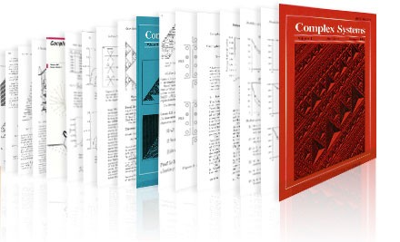

| Latest Updates |
|
|
| Important dates |
|
Friday, November 15, 2021 (Closed) Friday, December 17, 2021 Tuesday, January 04, 2022 March 03-05, 2022 |
| Contacts |
|
| Cellular Automata India |
| Publishers |
 |
| Sponsored by |
 |
| Special Issue |
Cellular automata (CAs), one of the most important models of natural computing, are a paradigm of fine-grained parallel computation which have been explored to understand complex systems by developing their model at the microscopic level. Since their inception in the 1950s, CAs have attracted the attention of several researchers over various backgrounds and fields for modeling different physical, natural as well as real-life phenomena. In the last 30 years, the world has seen their immense potential in developing the cutting edge technologies.
Technology refers to the collection of techniques, methods or processes used to provide some services or solutions to problems, or in the accomplishment of an objective, such as scientific invigilation. The CAs have been historically used as a method for simulating biological and physical systems, and utilized to theoretically study such systems. Since late 1980s, the CAs have been increasingly receiving their popularity as technology in the present era of VLSI, due to their simplicity, modularity and cascadability. For the path-breaking developments of technology, however, proper theoretical foundation is mandatory. In this backdrop, this conference aims to promote fundamental research on cellular automata theory, as well as cellular automata based unconventional design approaches in state-of-the art technological solutions for different emergent areas and challenges. It also focuses on international collaboration between Computer Scientists, Mathematicians and Technologists of Asia and the other parts of the world. It can popularize research on unconventional computing among the academicians, scientists and engineers of Asian countries.
The scope of the conference includes all the topics related to theory and applications of cellular automata. In particular, the topics of interest include (but is not limited to) the following:
|
A. Algebraic and Theoretical aspects of CA
|
|
B. Cellular Automata Models and Computation
|
|
C. Non-uniformity in Cellular Automata
|
|
D. Cellular Automata, Hardware Design and Security
|
|
E. Cellular Automata, Machine Learning and Artificial Intelligence
|
| Important Dates | ||
| Paper Submission deadline | : | |
| Notification to Authors | : | Friday, December 17, 2021 |
| Deadline for camera-ready papers | : | Tuesday, January 04, 2022 |
| Conference | : | March 03-05, 2022 |
ASCAT 2022 proceedings would be published by the Springer (AISC Series) and will be made
digitally available in Springer subject to fulfilling
necessary conference registration and presentation formalities.
Extended versions of a selected number of papers presented at the conference is planned to be published in a special issue of Journal of Cellular Automata and Complex Systems.
 |
|
 |
 |